07/01/2015 — Hình ảnh sóng T thiếu niên tồn tại dai dẳng
Bản dịch tiếng Việt của bài "Persistent Juvenile T-wave Pattern" – Dr. Smith’s ECG Blog. Giữ nguyên toàn bộ 11 hình ảnh của bản gốc.
Bài viết này do Brooks Walsh, MD, một bác sĩ cấp cứu, cùng với Steve Smith thực hiện, với sự giúp đỡ của Ken Grauer, một người khá xuất sắc về điện tâm đồ.
Brooks giải quyết vấn đề khó về sóng T thiếu niên tồn tại dai dẳng (Persistent Juvenile T-waves, PJTWP). Đây là những sóng T đảo ngược hơi không đối xứng ở V1-V3, nhưng không lan xa hơn. Điều cốt lõi là có rất ít hướng dẫn chắc chắn về chủ đề này.
Tóm tắt
Những điểm quan trọng cần cân nhắc về PJTWP:
1. Bệnh nhân điển hình là phụ nữ người Mỹ gốc Phi dưới 30 tuổi. Ở nam giới trên 19 tuổi, hiếm khi có sóng T đảo ngược lan quá chuyển đạo V1, trừ khi đặt sai vị trí điện cực hoặc cũng có thể do hít vào sâu trong lúc ghi (1).
2. Sóng T đảo ngược hơi không đối xứng ở V1-V3. Sóng T đảo ngược lan tới V4 và xa hơn chỉ nên gặp ở bệnh nhân dưới 12 tuổi.
3. “Sóng T đảo ngược lành tính” (Benign T-wave Inversion) là một dạng sóng T đảo ngược không bệnh lý khác. Nó thường lan tới V4 và xa hơn, có ST chênh lên một chút, và sóng T hai pha. Nó gặp chủ yếu ở nam giới trẻ người Mỹ gốc Phi.
4. Không có bất thường cấu trúc tim.
5. Các bệnh lý đe dọa tính mạng chủ yếu cần chẩn đoán phân biệt là
a) Thiếu máu cục bộ thành trước (do thuyên tắc phổi hoặc ACS)
b) ARVD, loạn sản thất phải gây loạn nhịp (Arrhythmogenic Right Ventricular Dysplasia – bệnh cơ tim thất phải gây loạn nhịp, ARV Cardiomyopathy). Bệnh tương đối hiếm, nhưng gây ra các rối loạn nhịp chết người.
ARVD: sóng T đảo ngược ở V1-V3, với hình thái PJTWP điển hình, nhưng đi kèm với
i) Ngất không có tiền triệu,
ii) PVC có hình thái LBBB,
iii) Rối loạn nhịp thất, hoặc
iv) Sóng Epsilon dĩ nhiên rất đặc hiệu nhưng không nhạy đối với ARVD
v) Nam giới trên 19 tuổi chắc chắn cần được đánh giá thêm.
6. Dù được gọi là “tồn tại dai dẳng”, những sóng T này không phải lúc nào cũng dai dẳng. Thay vào đó, giống như mọi dấu hiệu lành tính khác, kể cả tái cực sớm, có vẻ như chúng có thể không có trên điện tâm đồ trước đó mà vẫn lành tính.
Hình ảnh sóng Tthiếu niên tồn tại dai dẳng (PJTWP) – sự nhầm lẫn dai dẳng?
Một
phụ nữ người Mỹ gốc Phi 32 tuổi đến khoa cấp cứu (ED) vì những cơn
hồi hộp đánh trống ngực và tim “đập dồn dập”. Bà có tiền sử đái tháo đường (DM) và tăng huyết áp (HTN). Các dấu hiệu sinh tồn
và khám thực thể không có gì đáng chú ý. Một điện tâm đồ đã được ghi:

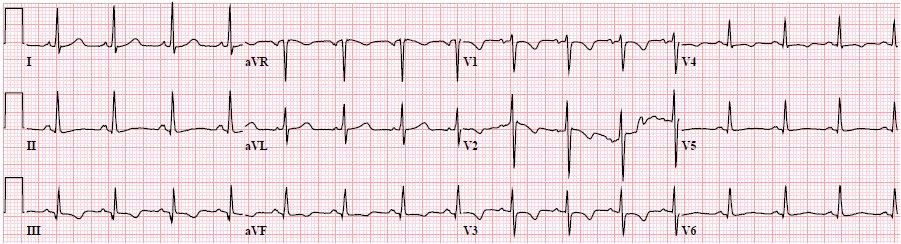
Điện tâm đồ này
được so sánh với một điện tâm đồ ghi 7 năm trước:

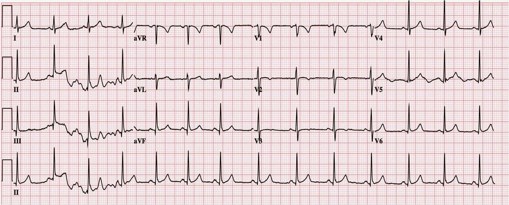
Đây
là một câu hỏi khó trả lời, nhưng đã có một số công bố
trong vài năm gần đây làm sáng tỏ phần nào về PJTWP. Tôi sẽ điểm lại 5 vấn đề
mà y văn này nêu bật, rồi quay lại với bệnh nhân của chúng ta.
Vấn đề 1. Định nghĩaPJTWP
Thật
đáng ngạc nhiên là rất khó tìm được một mô tả rõ ràng về PJTWP.
Định nghĩa
hình ảnh sóng T thiếu niên thực sự
Cũng đáng xem lại hình ảnh sóng T thiếu niên “thực sự”. Hãy nhớ rằng thất phải (RV) của
trẻ sơ sinh đã trải qua 9 tháng chống lại tuần hoàn phổi có sức cản cao,
và vì thế RV bị phì đại (không phải do bệnh lý). Kết quả là có thể có những dấu hiệu điện tâm đồ
của ưu thế thất phải, bao gồm sóng T đảo ngược (TWI) ở các chuyển đạo V1-V3 hoặc V4 ở
trẻ nhỏ. Nhìn chung, hình ảnh này tiến triển thành hình ảnh của người lớn (tức là TWI
chỉ giới hạn ở V1) vào khoảng 10 tuổi.
Đặc điểm của hình ảnh sóng T thiếu niên “thực sự” gồm sóng T đảo ngược nông, giới hạn ở V1-V3/V4,
sóng T đảo ngược có hình thái không đối xứng,
và không có đoạn ST
chênh lệch đáng kể. Ví dụ, đây là điện tâm đồ của một bé gái 3 tuổi
khỏe mạnh:

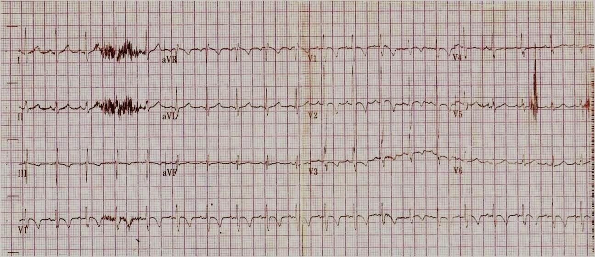
Một số người sẽ gọi chúng là đối xứng, trái ngược với các sóng T rất không đối xứng của, chẳng hạn, phì đại thất trái (Left Ventricular Hypertrophy) dưới đây.

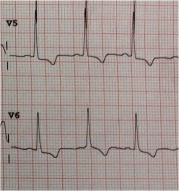
Để so sánh, đây là các sóng T đối xứng của hội chứng Wellens kiểu B:

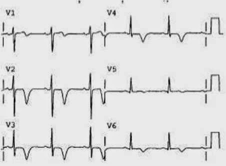
Điện tâm đồ
của một trẻ 3 tuổi khỏe mạnh khác, lấy từ Chan và cs. (2)

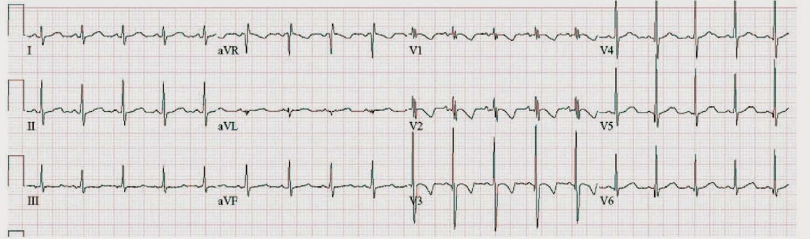
Một
ví dụ về hình ảnh sóng T thiếu niên ở một bé trai 11 tuổi khỏe mạnh được trình bày
trong bài báo của Sharieff và Rao:(3)

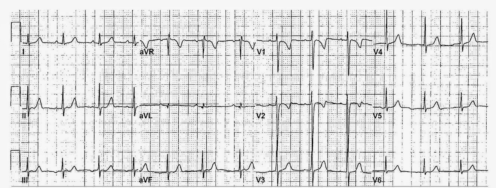
Định nghĩa
hình ảnh sóng T thiếu niên “tồn tại dai dẳng” ở người lớn
Không
có định nghĩa thống nhất nào cho biến thể TWI ở người lớn này. Dù một tác giả
đề xuất tiêu chuẩn “sóng T đảo ngược không đối xứng ở
các chuyển đạo trước tim phải, không kèm bất thường nào khác”(4), không phải nhà nghiên cứu nào cũng đồng ý.
Ví dụ, ít nhất ba bài báo
cho rằng PJTWP thường đi kèm ST chênh lên đáng kể
ở chính các chuyển đạo đó.(5, 6, 7)
Hãy xem kỹ những hình này, vì chúng tôi không đồng ý rằng đây là PJTWP!
Tác giả: Uberoi

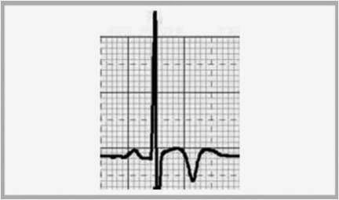
Tác giả: Choo 2002

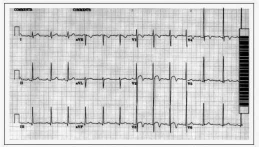
Năm 2009
Tác giả: Papadakis

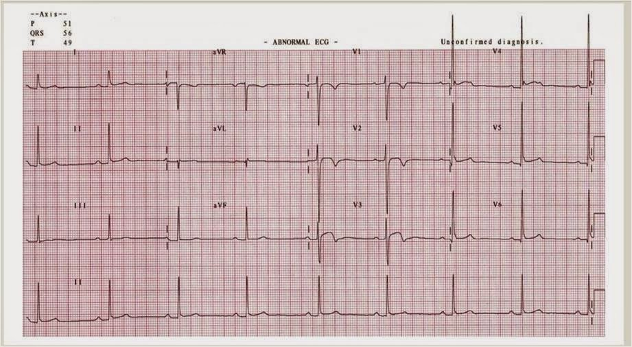
Cả
ba điện tâm đồ này đều cho thấy ST chênh lên dạng vòm đi trước TWI ở các chuyển đạo trước
tim, một đặc điểm không thường
gặp ở trẻ em. Hình ảnh này được các tác giả khác nhau gọi là “sóng T đảo ngược
lành tính” (BTWI), “ST chênh lên và sóng T đảo ngược”, hoặc biến thể bình thường ST-T (STTNV). Xem nhiều ví dụ về BTWI tại đây. Trái
với PJTWP, hình ảnh STE/TWI của BTWI gặp ở nam nhiều hơn
nữ,(8) và được một số người coi là một biến thể liên quan đến luyện tập thể thao. Hình ảnh này đặc biệt phổ biến ở nam giới người Mỹ gốc Phi.(8)
Vấn đề 2. PJTWP gặpnhiều hơn ở nữ giới.
Phần lớn
các nghiên cứu cho thấy TWI vùng trước gặp ở nữ nhiều hơn nam. Trong một
nghiên cứu ở Phần Lan, đại đa số (87%) những người có TWI ở các chuyển đạo trước
tim phải là nữ (9), và một tổng quan hồi cứu thực hiện tại
New Jersey cũng ghi nhận tỷ lệ tương tự.(4). Ở phía bên kia địa cầu, trong một
quần thể người Bedouin ở Israel, chỉ phụ nữ mới có hình ảnh này (10).
Vấn đề 3. TWI (PJTWP hay BTWI?) gặpnhiều hơn ở người gốc Phi
Tương tự
các hình ảnh bất thường tái cực không điển hình khác, PJTWP dường như
gặp phổ biến hơn ở bệnh nhân gốc Phi. Trong một đoàn hệ phụ nữ da đen và
da trắng ở Vương quốc Anh, 15% phụ nữ da đen có TWI ở các chuyển đạo
trước, trong khi chỉ 4% phụ nữ da trắng có.(11). Kết quả tương tự cũng thấy ở một đoàn hệ
vận động viên Anh và Pháp.(12). Trong một nhóm cầu thủ bóng bầu dục Mỹ
chuyên nghiệp, 4,3% cầu thủ da đen có hình ảnh này, trong khi chỉ 1% cầu thủ
da trắng có.(6) Một nghiên cứu năm 2008 cho thấy TWI (ở
vị trí không xác định) phổ biến hơn nhiều ở vận động viên da đen so với da trắng.(13) Đáng tiếc là các nghiên cứu này bị phức tạp hóa bởi sự nhầm lẫn giữa hình ảnh PJTWP và BTWI.
Vấn đề 4. Có thể nó khôngthuộc về “điện tâm đồ của vận động viên”.
Một
số biến thể điện tâm đồ đã được mô tả ở các vận động viên được huấn luyện cường độ cao; ví dụ
blốc AV mức độ thấp, hình ảnh giả LVH, RSr’ và tái cực sớm.(14) Tuy nhiên, vẫn chưa rõ liệu TWI
vùng trước có thuộc nhóm biến thể này hay không.
Một
số nghiên cứu gợi ý rằng sóng T đảo ngược vùng trước phổ biến
hơn ở vận động viên, và chúng biến mất khi ngừng luyện tập cường độ cao.(15) Tuy nhiên, Sharma ghi nhận tỷ lệ
mắc TWI vùng trước lớn hơn 2 mm là như nhau ở
cả vận động viên lẫn người không phải vận động viên.(16)
Các chuyên gia
khác cũng đồng tình với quan điểm này.(17) Theo đó, ít nhất 3 nhóm
khác nhau đã khuyến cáo rằng vận động viên có TWI ở V2 và V3 nên được
đánh giá thêm, ngay cả khi hiện tại không có triệu chứng.(5, 18, 19)
Vấn đề 5. PJTWP chỉ được xem xét sau khi đã loại trừ thiếu máu cục bộ, PE vàARVC.
Chẩn
đoán PJTWP chỉ nên được đưa ra sau khi đã cân nhắc các nguyên nhân
nguy hiểm hơn gây TWI vùng trước. Những thay đổi điện tâm đồ như vậy có thể phản ánh bệnh phổi tắc nghẽn mạn tính (COPD) nặng,
thuyên tắc phổi (PE), hoặc tăng áp phổi. Nhồi máu cơ tim thành sau hoặc thiếu máu cục bộ vùng trước cũng cần được
loại trừ.
Bệnh cơ tim thất phải gây loạn nhịp
(ARVC) là một bệnh hiếm, với các biểu hiện
trên điện tâm đồ có thể bị nhầm với PJTWP. Tiêu chuẩn nhận diện ARVC
trên điện tâm đồ chuẩn bao gồm “sóng T đảo ngược ở các chuyển đạo trước tim phải (V1,
V2 và V3) hoặc xa hơn ở người trên 14 tuổi
(khi không có blốc nhánh phải hoàn toàn với QRS ≥120 ms)” là một tiêu chuẩn
chính để chẩn đoán.”(20) Rõ ràng, trong bối cảnh phù hợp như ngất, hồi hộp đánh trống ngực hoặc nhịp nhanh, phải cân nhắc ARVC
trước khi chẩn đoán PJTWP trên điện tâm đồ.
Dưới đây là tiêu chuẩn chẩn đoán ARVD của Nhóm chuyên trách (Task Force) đăng trên Eur Heart Journal (link toàn văn): Diagnosis of arrhythmogenic right ventricular cardiomyopathy/dysplasia: proposed modification of the task force criteria (Chẩn đoán bệnh cơ tim/loạn sản thất phải gây loạn nhịp: đề xuất sửa đổi tiêu chuẩn của Nhóm chuyên trách).
Vậy, bệnh nhân của chúng tôicó hình ảnh sóng T thiếu niên tồn tại dai dẳng không?
Điện tâm đồ
năm 2014 cho thấy sóng T đảo ngược không đối xứng ở các chuyển đạo V1 – V3, không có ST
chênh lên hay dấu hiệu đáng lo ngại nào khác trên điện tâm đồ. Tuy nhiên, xem lại các điện tâm đồ cũ
của bệnh nhân cho thấy TWI này đã thay đổi so với trước, và rõ
hơn so với 7 năm trước. Đặc biệt, sóng T ở V3 hiện có độ
sâu hơn 2 mm.
Bệnh nhân
được hội chẩn tim mạch, các lần đo troponin liên tiếp đều âm tính, và
siêu âm tim từ 3 năm trước được ghi nhận là bình thường. Bệnh nhân được cho xuất viện
từ khoa cấp cứu với kế hoạch theo dõi ngoại trú tại chuyên khoa tim mạch.

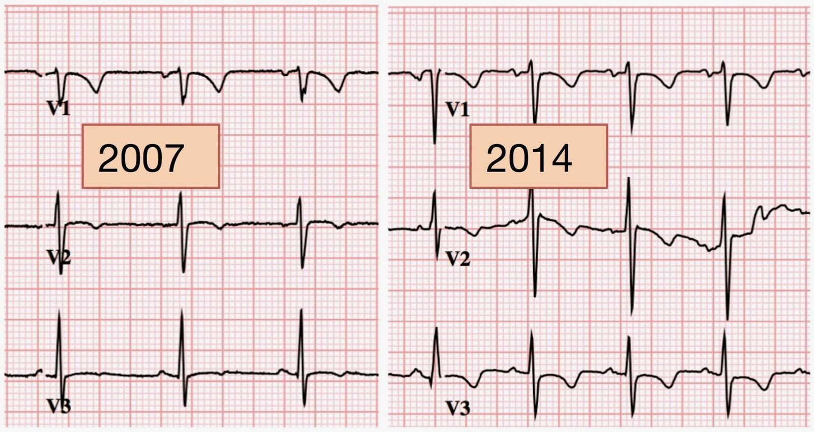
Nhiều điện tâm đồ đã được ghi ở mỗi bệnh nhân, nên ít có khả năng một sai sót kỹ thuật (đặt điện cực) gây ra hình ảnh này. Ở ca #1, 2 điện tâm đồ được ghi vào các tháng khác nhau của năm 2007 và 2014 và cho kết quả nhất quán.
Có thể có ý kiến phản đối rằng nếu không đánh giá xác định bằng siêu âm tim, chụp mạch, MRI, v.v., thì chúng ta không thể chắc chắn TWI không phải do một rối loạn cấu trúc chưa được chẩn đoán, kể cả ARVD. Việc đánh giá chỉ được tiến hành ở mức mà từng bác sĩ lâm sàng thấy là cần thiết đối với triệu chứng khi đến khám.
Mặt khác, chúng tôi không biết có nghiên cứu theo dõi dọc nào trên quần thể bình thường xác nhận rằng những gì trông giống PJTWP KHÔNG tiến triển về sau. Chúng tôi biết rằng nhiều hình ảnh sóng T đảo ngược là lành tính.
Vì hình ảnh này thường được mặc định là lành tính, các bác sĩ lâm sàng có thể đã “đánh giá chưa đầy đủ” các dấu hiệu điện tâm đồ trong ca này. Định kiến về TWI ở bệnh nhân nữ người Mỹ gốc Phi có thể góp phần làm việc đánh giá bị hạn chế, dẫn đến kết luận vội vàng (premature closure) trong chẩn đoán.
Những hạn chế này cho thấy cần xem xét lại tính lành tính của PJTWP.
Vậy
– có thể chẩn đoán PJTWP không nếu trên thực tế hình ảnh này không
tồn tại dai dẳng? Mặc dù đã có nhiều bài báo mới về chủ đề này, vẫn
chưa có hướng dẫn nào cho vấn đề này.
Hơn nữa,
như đã bàn ở Vấn đề #1 phía trên, phần lớn y văn về PJTWP có đưa vào
những điện tâm đồ có ST chênh lên đáng kể ở các chuyển đạo trước, một hình ảnh rõ ràng là không mang tính thiếu niên. Hình ảnh STE/TWI này khác biệt
đến mức nào so với PJTWP “thực sự”? Đó là một biến thể nhỏ, hay nó có
ý nghĩa lâm sàng quan trọng? Một lần nữa, các kết quả gần đây vẫn chưa cho câu trả lời rõ ràng.
Tôi
đoán có thể nói rằng ca bệnh và phần tổng quan của chúng tôi gợi ý rằng hình ảnh sóng T “thiếu niên
tồn tại dai dẳng” có thể chẳng dai dẳng mà cũng chẳng thiếu niên.
Tài liệu tham khảo
1. Marcus FI. Prevalence of T-Wave Inversion Beyond V1 in Young Normal Individuals and Usefulness for the Diagnosis of Arrhythmogenic Right Ventricular Cardiomyopathy/Dysplasia. Tạp chí Am J Cardiol 2005;95:1070-1071.
2.
Chan TC, Sharieff GQ, Brady WJ.
Electrocardiographic Manifestations: Pediatric ECG. Tạp chí J. Emerg. Med.
2008;35(4):421-430. doi:10.1016/j.jemermed.2007.09.039.
3. Sharieff
GQ, Rao SO. The Pediatric ECG. Tạp chí Emerg. Med. Clin. North Am.
2006;24(1):195-208. doi:10.1016/j.emc.2005.08.014.
4. Kaid
KA, Maqsood A, Cohen M, Rothfeld E. Further characterization of the “persistent
juvenile T-wave pattern” in adults. Tạp chí J. Electrocardiol.
2008;41(6):644-645. doi:10.1016/j.jelectrocard.2008.08.028.
5. Uberoi
A, Stein R, Perez MV, và cs. Interpretation of the Electrocardiogram of Young
Athletes. Tạp chí Circulation 2011;124(6):746-757.
doi:10.1161/CIRCULATIONAHA.110.013078.
6. Choo
JK, Abernethy III WB, Hutter Jr. AM. Electrocardiographic observations in
professional football players. Tạp chí Am. J. Cardiol. 2002;90(2):198-200.
doi:10.1016/S0002-9149(02)02454-2.
7. Papadakis
M, Basavarajaiah S, Rawlins J, và cs. Prevalence and significance of T-wave
inversions in predominantly Caucasian adolescent athletes. Tạp chí Eur. Heart J.
2009;30(14):1728-1735. doi:10.1093/eurheartj/ehp164.
8. Roukoz H. Wang K. ST Elevation and Inverted T Wave as Another Normal Variant Mimicking Acute Myocardial Infarction: The Prevalence, Age, Gender, and Racial Distribution. Tạp chí Annals of Noninvasive Electrocardiology 16(1):64-69, tháng Một năm 2011. doi:10.1111/j.1542-474X.2010.00410.x.
9. Aro
AL, Anttonen O, Tikkanen JT, và cs. Prevalence and Prognostic Significance of
T-Wave Inversions in Right Precordial Leads of a 12-Lead Electrocardiogram in
the Middle-Aged Subjects. Tạp chí Circulation 2012;125(21):2572-2577.
doi:10.1161/CIRCULATIONAHA.112.098681.
10. Assali
A-R, Khamaysi N, Birnbaum Y. Juvenile ECG pattern in adult black arabs. Tạp chí J.
Electrocardiol. 1997;30(2):87-90. doi:10.1016/S0022-0736(97)80014-3.
11. Malhotra
A, Dhutia H, Gati S, và cs. 103 Prevalence and
significance of anterior T wave inversion in females. Tạp chí Heart Br. Card. Soc.
2014;100 Suppl 3:A60. doi:10.1136/heartjnl-2014-306118.103.
12. Rawlins
J, Carre F, Kervio G, và cs. Ethnic Differences in Physiological Cardiac
Adaptation to Intense Physical Exercise in Highly Trained Female Athletes. Tạp chí Circulation
2010;121(9):1078-1085. doi:10.1161/CIRCULATIONAHA.109.917211.
13. Magalski
A, Maron BJ, Main ML, và cs. Relation of Race to Electrocardiographic Patterns
in Elite American Football Players. Tạp chí J. Am. Coll. Cardiol.
2008;51(23):2250-2255. doi:10.1016/j.jacc.2008.01.065.
14. Wu
J, Stork TL, Perron AD, Brady WJ. The athlete’s electrocardiogram. Tạp chí Am. J.
Emerg. Med. 2006;24(1):77-86. doi:10.1016/j.ajem.2005.04.009.
15. Wilson
MG, Sharma S, Carré F, và cs. Significance of deep T-wave inversions in
asymptomatic athletes with normal cardiovascular examinations: practical
solutions for managing the diagnostic conundrum. Tạp chí Br. J. Sports Med.
2012;46(Suppl 1):i51-i58. doi:10.1136/bjsports-2011-090838.
16. Sharma
S, Whyte G, Elliott P, và cs. Electrocardiographic changes in 1000 highly
trained junior elite athletes. Tạp chí Br. J. Sports Med. 1999;33(5):319-324.
17. Corrado
D, Biffi A, Basso C, Pelliccia A, Thiene G. 12-lead ECG in the athlete:
physiological versus pathological abnormalities. Tạp chí Br. J. Sports Med. 2009;43(9):669-676.
doi:10.1136/bjsm.2008.054759.
18. Drezner
JA, Ackerman MJ, Anderson J, và cs. Electrocardiographic interpretation in
athletes: the “Seattle Criteria.” Tạp chí Br. J. Sports Med. 2013;47(3):122-124.
doi:10.1136/bjsports-2012-092067.
19. Corrado
D, Pelliccia A, Heidbuchel H, và cs. Recommendations for interpretation of
12-lead electrocardiogram in the athlete. Tạp chí Eur. Heart J.
2010;31(2):243-259. doi:10.1093/eurheartj/ehp473.
20. Marcus
FI, McKenna WJ, Sherrill D, và cs. Diagnosis of Arrhythmogenic Right
Ventricular Cardiomyopathy/Dysplasia Proposed Modification of the Task Force
Criteria. Tạp chí Circulation 2010;121(13):1533-1541.
doi:10.1161/CIRCULATIONAHA.108.840827.
21. Dalal
D, Nasir K, Bomma C, và cs. Arrhythmogenic Right Ventricular Dysplasia A United
States Experience. Tạp chí Circulation 2005;112(25):3823-3832.
doi:10.1161/CIRCULATIONAHA.105.542266.
22. Jha
AK, Varosy PD, Kanaya AM, và cs. Differences in Medical Care and Disease
Outcomes Among Black and White Women With Heart Disease. Tạp chí Circulation
2003;108(9):1089-1094. doi:10.1161/01.CIR.0000085994.38132.E5.